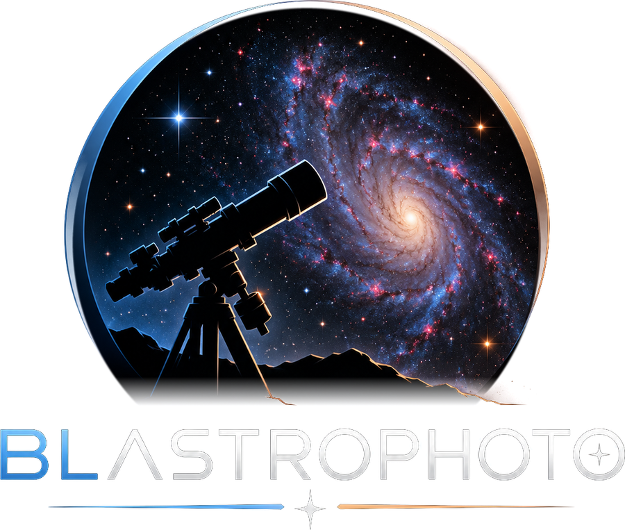

About
Behind the pictures
Hello and thank you for visiting my site! My name is Brandon Lewis. I'm a husband, father, IT nerd, and follower of Jesus!
When I was young, astronomy was always on my mind. I loved the photos and I was always in awe of the sheer size of space. Everything about astronomy purely is wonderful and it points to the creative mind of our Wonderful Creator. Something about the intricate beauty of each unique space object captivates my heart every time I see something out there. Well, when I turned adult I finally was able to do this and a dream was made true. Since 2019 I have collected well over 8000 hours of total exposure time on a variety of different deep space objects and that number continues to climb every clear night.
The purpose of this webpage is to share the things I've been able to see with whomever else enjoys looking at such beautiful wonders. I hope to eventually provide information about the gear I use to help guide anyone else interested in starting this hobby.
The other purpose of this website is to promote a new tool I've developed called AstroTracker. This app is the bones behind the content on this site and helps me keep track of years worth of photography. If you're interested in seeing more about this incredible new tool, please feel free to visit https://www.blastrophoto.com/AstroTracker
